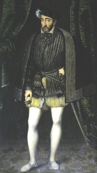

1547-1559Règne
ValoisDynastie
TestonEspèce phare
DouzainBillon
Henri II (1547-1559) poursuit la politique monétaire de son père François Ier. Les testons et douzains restent des espèces importantes. Le règne est marqué par les tensions religieuses naissantes et par une administration monétaire encore largement décentralisée entre plusieurs ateliers (Paris, Lyon, Toulouse, Rouen…).
Les monnaies d'Henri II constituent un maillon essentiel de la série des Valois. Après sa mort accidentelle en 1559, le trône passe à son fils François II, puis rapidement à Charles IX.
Sources : catalogues Ciani, Duplessy · infonumis.info
Les monnaies du règne d’Henri II
'" />Teston, 2e type
Date : 1558 ; Atelier : L (Bayonne) ; 91.105 exemplaires (dont les demi-testons)
Argent 898 ‰ ; 29 mm ; 9.43g (théorique 9.59g)
Avers : HENRICVS. II. D. G. FRANCOR. REX (Henri II, par la grâce de Dieu, roi des Francs) ; Buste de Henri II à droite (* A COMPLETER *)
Revers : XPS. VINCIT. XPS. REGNAT. XPS. IMP. 1558 (Mg) (Le Christ vainc, le Christ règne, le Christ commande) ; Ecu de France couronné accosté de deux H couronnées ; lettre d'atelier à la pointe de l'écu.
Références : *****
Douzain aux croissants
Date : 1549 ; Atelier : D (Lyon) ; 172.800 exemplaires ; Degré de rareté : R1
Point secret : 12ème au droit et au revers
Billon ; 24.5 mm ; 2.44g (théorique 2.62g)
Avers : + HENRICUS. 2. DEI. G. FRANCORV. REX. (Mm) (Mg) (Henri 2, par la grâce de Dieu, roi de France) ; Ecu de France couronné accosté de deux croissants couronnés ; lettre d'atelier à la pointe de l'écu.
Revers : + SIT. NOMEN. DNI. BENEDICTVM. 1549 (Mm) (Béni soit le nom du seigneur) ; Croix fleurdelisée, formée de huit croissants entrelacés, cantonnés aux 1 et 4 d'une lettre H, aux 2 et 3 d'une couronne.
Références : C.1305 L.835 Dy.997 Sb.4380 Monnaie très commune fabriquée à plus de 95 millions d'exemplaires par 31 ateliers différents. Les douzains aux croissants furent frappés à Lyon de 1549 à 1560 pour un total de production qui peut être estimé à 7 481 833 exemplaires.